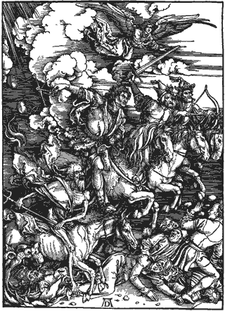

|

Armageddon tired of waiting for the end of the world as we know it
Let me live long enough to go out in "the big one".
- - - - - - - - - -
by Rob Landeros
 THINK IT IS ACCURATE to say that most people fear the coming of Armageddon. I have the opposite fear. That is to say, I fear that I will not be around for the apocalyptic ending of the world. My reasons are not the same as those of the fundamentalist Christians. I don't care about the fulfillment of the prophecies and the reckoning as foretold in Revelations. I don't expect that, if there were to come such a judgment day, I would be among the chosen. It's simply that, if I had my druthers on how to depart this life, I'd go out in "the big one". THINK IT IS ACCURATE to say that most people fear the coming of Armageddon. I have the opposite fear. That is to say, I fear that I will not be around for the apocalyptic ending of the world. My reasons are not the same as those of the fundamentalist Christians. I don't care about the fulfillment of the prophecies and the reckoning as foretold in Revelations. I don't expect that, if there were to come such a judgment day, I would be among the chosen. It's simply that, if I had my druthers on how to depart this life, I'd go out in "the big one".
Many believe that 9/11 was the harbinger of the end of days. I don't believe that myself, but I am glad to have been alive to have witnessed the event. I am not glad that it happened, just glad I was around when it happened. As horrible as it was, you couldn't argue that it didn't make the news exceedingly more interesting and relevant again. Yes, all of a sudden our world felt like a more dangerous place in which to live, but it also became a more fascinating one as well. I was also grateful that there was live television coverage of the horror, unlike my parent's generation that only heard about Pearl Harbor on the radio hours after the fact with film footage unavailable until days later. May you live in interesting times - with good technology.
When contemplating the finality of my own life and the ensuing void, the most disheartening thought is that life will go on for everybody else and I will miss out on all the interesting developments in technology, culture, world affairs, etc. Death is like being forced to leave in the middle of a great movie that will never be screened again. You don't get to see the cool scenes and special effects, and never learn how the story ends. Those who live to see Armageddon will at least get to see the end of the story... this story at any rate. I understand that there will be a sequel for the righteous 144,000.
So if I were to be fortunate enough to die in the ultimate holocaust, I would know that I wouldn't be missing anything to come later, because there wouldn't be anything coming later to miss. And the best part would be that we'd all go out together. It would be a shared experience by the world community, a real global, multinational happening. There would be no grieving and mourning because there would be no one left to grieve and mourn.
What I find amazing about suicide bombings and the 9/11 attacks in particular is in trying to imagine how the terrorists could go through with it. Not because of their fearlessness in the face of certain death, but in knowing they were performing a spectacular act that would reverberate through the entire political landscape and change the history of the world forever, and then not being around afterward to see how it all turned out. I suppose they must have believed that they would be looking down from paradise surrounded by their 72 black eyed virgins savoring the aftermath like Olympian gods observing the effects of their whimsical meddlings in the affairs of the mortals now scurrying to and fro like angry ants in a stirred anthill. That's what makes true believers, of any organized religion, so damned dangerous. I'm glad most people's faith isn't as strong and absolute.
If you too were horrified yet fascinated watching the airliners plow into the WTC towers and sat dumbfounded as they collapsed in huge billowing clouds of dust and debris that chased crowds of people fleeing in terror down the streets of New York like some fantastic, surreal Godzilla movie, then imagine such a spectacle multiplied a million times over and you've got one really big show. And we'd all watch it happen on cable.

|